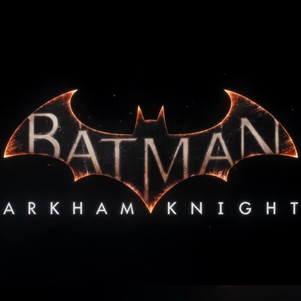

Batman: Arkham Knight

Batman: Arkham Knight es un videojuego de acción-aventura de mundo abierto desarrollado por Rocksteady Studios y publicado por Warner Bros. Interactive Entertainment para las consolas PlayStation 4, Xbox One y Microsoft Windows.
Las versiones para SteamOS-Linux y Mac fueron lanzadas unos meses del lanzamiento en consolas. Basado en el superhéroe de DC Comics Batman, es el sucesor del videojuego de 2013 Batman: Arkham Origins, y el cuarto juego principal en la serie Batman: Arkham. Kevin Conroy interpretó a Batman de nuevo, al igual que Mark Hamill con el Joker.
Fue lanzado a nivel mundial el 23 de junio de 2015